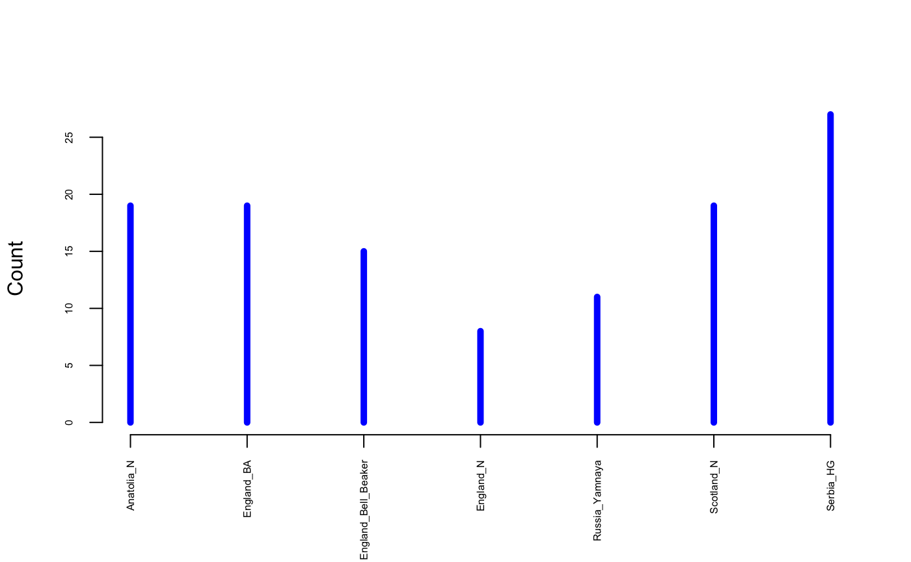
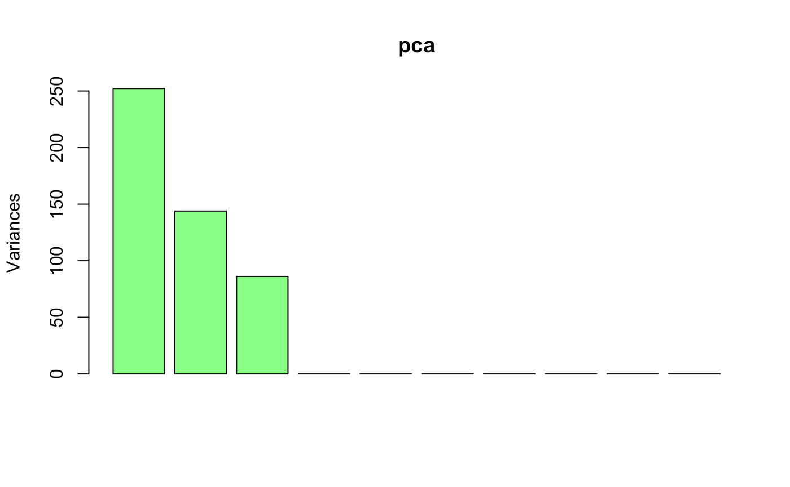
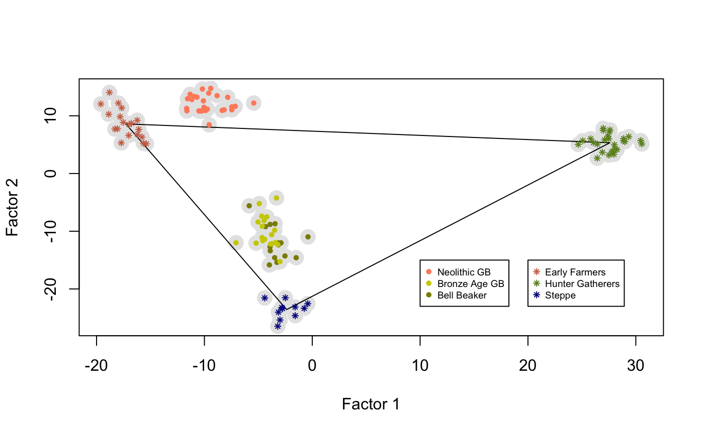
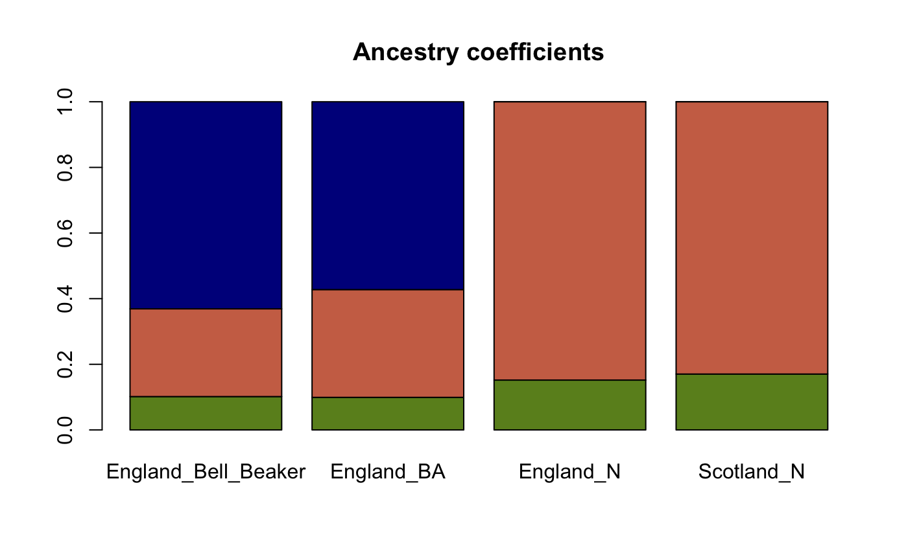
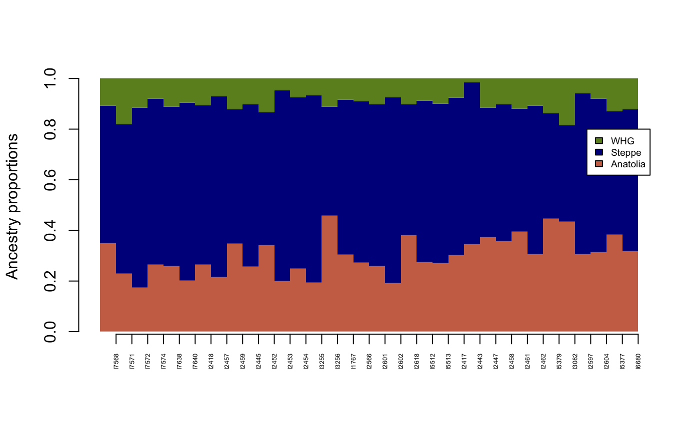

tfa-vignette.RmdSummary: The R package tfa performs factor analyses of temporal DNA or ancient DNA (aDNA) samples, correcting individual scores for the effect of allele frequency drift through time. The package implements a fast algorithm that computes \(K\) corrected factors, and it can provide estimates of ancestry proportions for a target individual or a target population given a set of source populations.
library(tfa)This section runs the main function of the tfa package on an example data set containing aDNA samples. The samples were extracted from a database available from David Reich’s lab. In this example, the data matrix contains 10,000 filtered SNP genotypes from 118 samples, from Neolithic and Bronze Age Great Britain, Steppe (Yamnaya), Anatolia (Early Farmers), and from Serbia (Hunter-Gatherers). Metadata and sample ages are also provided as separate objects. The command below shows how to load the data and which groups are included.
data(england_ba)
# Ancient DNA from Bronze Age Great Britain samples
# including Yamnaya, early farmers (Anatolia) and hunter-gatherers (Serbia)
attach(England_BA)
table(meta$Group.ID)
#>
#> Anatolia_N England_BA England_Bell_Beaker
#> 19 19 15
#> England_N Russia_Yamnaya Scotland_N
#> 8 11 19
#> Serbia_HG
#> 27Prehistoric dates for each sample are provided in years cal BP.
hist(age, col = "lightblue", xlab = "Age cal BP")
The data contain no missing genotypes. The missing values were imputed from a much larger data set. This was done in a preliminary analysis by using a nonnegative matrix factorization completion algorithm implemented in the R package LEA. Running a standard PCA on the data matrix clearly shows there are three main axes of variation in the genotypic data.

A first step of analysis consists of removing coverage bias from the genotypic data. The impact of coverage on analyses on those particular samples is not very large. In general, coverage bias may however strongly influence the results of factor analyses. To correct for coverage,a latent factor regression model implemented in the function coverage_adjust can be used as follows.
coverage <- meta$Coverage
geno <- coverage_adjust(genotype, coverage, K = 3, log = TRUE)According to the PCA, \(K = 3\) factors were used in the regression model. A factor analysis of the corrected data matrix geno can be performed as follows. The factor model has two main hyper-parameters: - the number of factors (k), - the drift parameter (lambda).
The number of factors could be determined by PCA or other methods for analysis of population structure. Here it could be taken equal to the number of axes in the PCA. Since the tfa method is based low rank approximation of data matrices, lower values such as k = 2 can be accepted.
The drift parameter (lambda) was determined by a grid search procedure. It was chosen as the value for which the effect of age was removed from the third factor of the tfa analysis, repeated several times.
mod <- tfa(Y = geno,
sample_ages = age,
k = 3,
lambda = 5e-1)The results look like a PC plot showing the relative positions of Great Britain samples with respect to their putative sources of ancestry.
plot(mod$u, pch = 19, cex = 2, col = "grey90", xlab = "Factor 1", ylab = "Factor 2")
center_yamnaya <- apply(mod$u[meta$Group.ID == "Russia_Yamnaya",], 2, mean)
center_anatolia <- apply(mod$u[meta$Group.ID == "Anatolia_N",], 2, mean)
center_hg <- apply(mod$u[meta$Group.ID == "Serbia_HG",], 2, mean)
lines(rbind(center_yamnaya, center_anatolia, center_hg, center_yamnaya))
points(mod$u[meta$Group.ID == "Russia_Yamnaya",], pch = 8, cex = .6, col = "darkblue")
points(mod$u[meta$Group.ID == "Anatolia_N",], pch = 8, cex = .6, col = "salmon3")
points(mod$u[meta$Group.ID == "Serbia_HG",], pch = 8, cex = .6, col = "olivedrab")
points(mod$u[meta$Group.ID == "England_Bell_Beaker",], pch = 19, cex = .6, col = "yellow4")
points(mod$u[meta$Group.ID == "England_BA",], pch = 19, cex = .6, col = "yellow3")
points(mod$u[meta$Group.ID %in% c("England_N", "Scotland_N"),], pch = 19, cex = .6, col = "salmon1")
legend(x = 20, y = -15, cex = .6,
legend = c("Early Farmers", "Hunter Gatherers", "Steppe"),
col = c("salmon3", "olivedrab", "darkblue"), pch = 8)
legend(x = 10, y = -15, cex = .6,
legend = c("Neolithic GB", "Bronze Age GB", "Bell Beaker"),
col = c("salmon1", "yellow3", "yellow4"), pch = 19)
# rm(list = ls())The R package tfa can provide estimates of ancestry proportions for a target individual or a target population given a set of source populations. The number of sources must be less or equal than the number of factors plus one. For this analysis, the metadata object must contain a column named Instance.ID indicating the ID of each individual and another column named Group.ID indicating the group ID of each individual.
colnames(meta)
#> [1] "Instance.ID" "Group.ID" "Country" "Coverage"Since the data.frame meta contains the correct information, it can be converted into an object of class tfa_data.
metadata <- as.tfa_data(meta)Now consider England_Bell_Beaker and England_BA as target populations and Anatolia_N (Early Farmers), Russia_Yamnaya (Steppe Pastoralists), Serbia_HG (Western Hunter-Gatherers) as potential source populations.
target = c("England_Bell_Beaker", "England_BA")
source = c("Anatolia_N", "Russia_Yamnaya", "Serbia_HG")The function ancestry_coefficients uses basic linear algebra to compute the coordinates of each target population
ancestry_coefficients(model = mod,
metadata = metadata,
source = source,
target = target)
#> Anatolia_N Russia_Yamnaya Serbia_HG
#> England_Bell_Beaker 0.2673478 0.6309998 0.10165241
#> England_BA 0.3283689 0.5723816 0.09924954We see that Bell Beaker samples share a large fraction of their ancestry with the steppe pastoralists. Changing the Anatolian population for another population of early farmers confirms this result.
ancestry_coefficients(model = mod,
metadata = metadata,
source = c("England_N", "Russia_Yamnaya", "Serbia_HG"),
target = target)
#> England_N Russia_Yamnaya Serbia_HG
#> England_Bell_Beaker 0.2844837 0.6732371 0.04227924
#> England_BA 0.3494159 0.6242594 0.02632469The result shows that the shared ancestry with Serbian hunter-gatherers reduces when farmers were from a closer geographic source. This could also suggest that the hunter-gatherer contribution to the England Neolithic gene pool may be substantial. To check this hypothesis, consider the sample from England with the first considered set of sources.
ancestry_coefficients(model = mod,
metadata = metadata,
source = c("Anatolia_N", "Russia_Yamnaya", "Serbia_HG"),
target = "England_N")
#> Anatolia_N Russia_Yamnaya Serbia_HG
#> England_N 0.9397651 -0.1484701 0.208705The negative value for the Russia_Yamnaya source suggests that this source did not contribute to the gene pool of Neolithic Scotland samples, and that it should be removed from the set of sources.
ancestry_coefficients(model = mod,
metadata = metadata,
source = c("Anatolia_N", "Serbia_HG"),
target = "England_N")
#> Anatolia_N Serbia_HG
#> England_N 0.8480804 0.1519196The result indeed suggests a substantial contribution of hunter-gatherers to Neolithic England farmers. The analysis can be summarized as follows
ancestry.B <- ancestry_coefficients(model = mod,
metadata = metadata,
source = c("Serbia_HG", "Anatolia_N", "Russia_Yamnaya"),
target = c("England_Bell_Beaker", "England_BA"))
ancestry.N <- ancestry_coefficients(model = mod,
metadata = metadata,
source = c("Serbia_HG", "Anatolia_N"),
target = c("England_N", "Scotland_N"))
ancestry.N <- cbind(ancestry.N, c(0,0))
ancestry <- rbind(ancestry.B, ancestry.N)
ancestry
#> Serbia_HG Anatolia_N Russia_Yamnaya
#> England_Bell_Beaker 0.10165241 0.2673478 0.6309998
#> England_BA 0.09924954 0.3283689 0.5723816
#> England_N 0.15191961 0.8480804 0.0000000
#> Scotland_N 0.17030362 0.8296964 0.0000000The results can be represented by a barplot as follows.

Since factor analysis is an individual-based, the geometric approach can be used to compute individual ancestry coefficients, looking like a popular STRUCTURE barplot.
source = c("Anatolia_N", "Russia_Yamnaya", "Serbia_HG")
target = c("England_Bell_Beaker", "England_BA")
Q_matrix <- ancestry_coefficients(model = mod,
metadata = metadata,
source = source,
target = target,
individual = TRUE)
barplot(t(Q_matrix),
border = NA,
space = 0,
axisnames = FALSE,
col = c("salmon3", "darkblue", "olivedrab"),
legend.text = c("Anatolia", "Steppe", "WHG"),
args.legend = list(y = 0.8, cex = .6),
ylab = "Ancestry proportions")
axis(1, at = 1:nrow(Q_matrix), labels = rownames(Q_matrix), las = 3, cex.axis = .4)